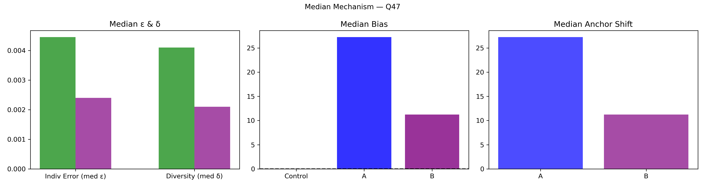

Question Q47: The Montreux Jazz Festival is starting! How much will $1 CAD be worth in CHF on Tuesday at 13:00 ET?
Super Summary
================================================================================
QUESTION Q47: 06_Export_0720_stats_VujQGdBivl.csv
The Montreux Jazz Festival is starting! How much will $1 CAD be worth in CHF on Tuesday at 13:00 ET?
Truth = 0.7562
N_ctrl = 172 N_ext = 33
================================================================================
[1] COLLECTIVE ERROR (E)
Control Ec: 0.0138 ± 0.0075
CI = [ 0.0014 , 0.0308 ]
Extremized Ex: 0.0012 ± 0.0009
CI = [ 0.0001 , 0.0036 ]
Difference (Ec - Ex) = 0.0126
Percent Change = 91.35%
Bootstrap:
P(Ex < Ec) = 0.9770
→ 97.7% of samples show extremized < control
[2] INDIVIDUAL ERROR (ε)
Control mean ε = 0.0220
Extremized ε = 0.0042
Percent Change = -80.93%
Welch t-test: t = 5.055, p = 9.806e-07
Cohen's d = 0.440
[3] DIVERSITY (δ)
Control SD = 0.0471
Extremized SD = 0.0073
Percent Change = -84.52%
Levene p = 0.02125
[4] ANCHOR DIAGNOSTICS
Anchor A = 0.7569
Anchor B = 0.7528
A_effective = True
B_effective = True
[5] EQUATION 6 CHECK
w_L = 0.8751 w_H = 0.8781
Delta = 0.0312
Criterion_L = True Criterion_H = True
Meets both = True
[6] δ–ε–E SCENARIO
Scenario: δ:down, ε:down, E:down
Mechanism Explanation: Calibration: anchors pull predictions inward toward the truth, reducing both individual error and diversity and improving collective accuracy.
================================================================================
FINAL INTERPRETATION (with actual figures)
================================================================================
For Q47, collective error shifted from 0.01 to 0.00 (91.35%). Bootstrap = 97.7%. Individual error changed by -80.93%, diversity changed by -84.52%. Scenario = δ:down, ε:down, E:down. Equation 6 feasibility = True.
================================================================================
Median Mechanism Plot
